Varun Chilukuri
I build robots, mechatronics and embedded systems, mostly at hackathons. Student at Leland High, San Jose.
Index
Solo · 1st Overall, Bay Valley Hacks
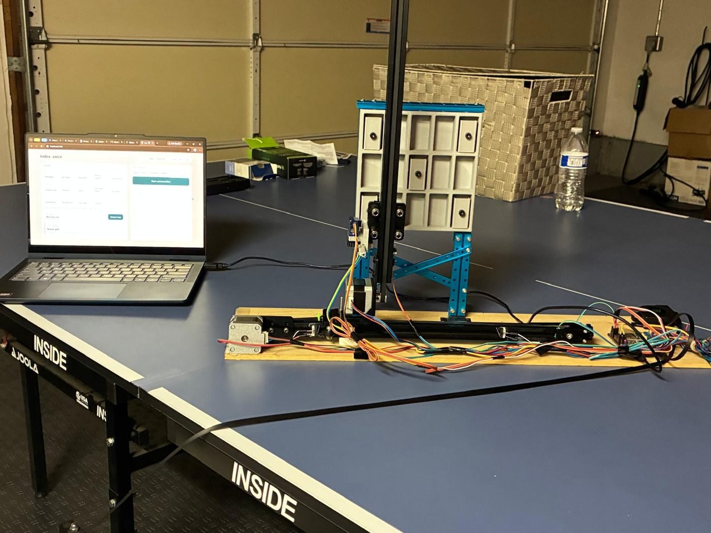
A voice-controlled robotic cabinet. Ask for what you need, by voice or from your phone, and a 3-axis robot pulls the exact tray out of 15 compartments, brings it within reach, and puts it back when you're done. Made for people who can't easily reach, search or remember, for about $300 in parts.
The AI voice agent can only act through verified commands: the page sends GO n, and the robot has to answer ACK n or the move is rejected. It only offers what's in stock and moves only after you say yes.
Controller: Maker-ESP32 with its own Wi-Fi and phone page
Motion: X and Z steppers on belts and linear rails; servo rack and pinion for depth
Gripper: Electromagnet onto a steel washer in each 3D-printed tray
Voice: ElevenLabs agent with three client tools
GitHub ↗
Live ↗
Demo ↗
Fetch
Co-founder · hardware lead · CSI Hacks
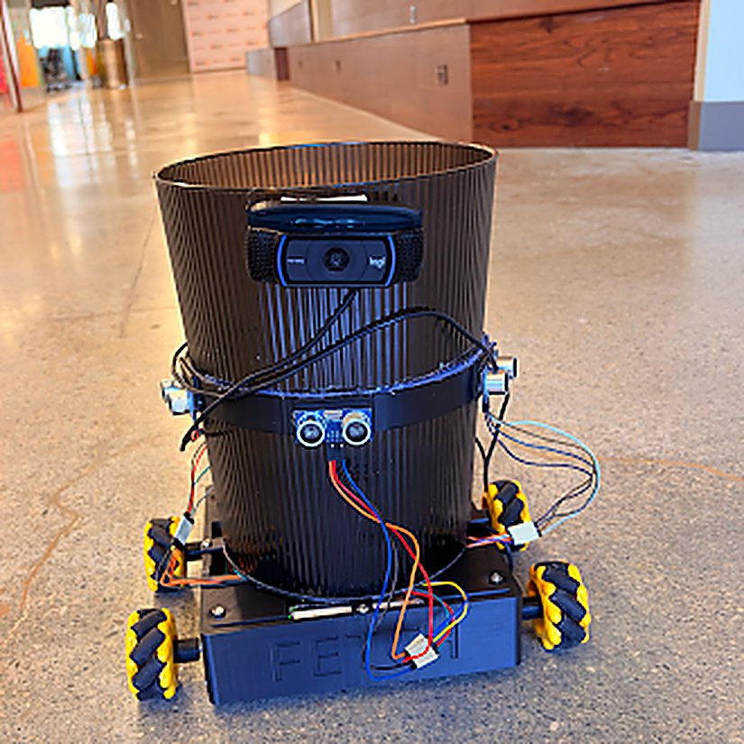
A trash can that drives itself to whoever calls it, finding its way with AprilTags instead of lidar. Built in about 8 hours; I did the CAD, electronics and hardware.
Compute: Pi 4 + Arduino Uno R4
Drive: 4× NEMA 17, mecanum
Navigation: AprilTag + QR, ultrasonic e-stop
GitHub ↗
Devpost ↗
Ceres
Co-founder · hardware lead · Berkeley Robotics Hackathon
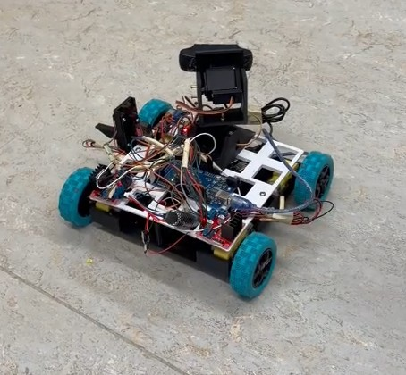
An affordable crop-scouting robot that spots diseased leaves with a VLM we trained, and probes the soil with a rack-and-pinion arm. Built in about 7 hours; I did the hardware.
Compute: Pi 4 + Arduino Mega
Drive: 4WD, dual L298N
Sensing: MG996R pan-tilt camera, STEMMA soil probe
GitHub ↗
Demo ↗
Street Sweeper
Team of 4 · hardware & electronics · Milpitas Hacks
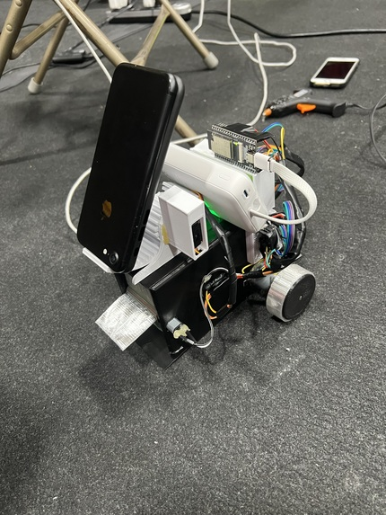
A trash-collecting robot you drive by typing commands, so playing with it doubles as a coding lesson.
Compute: ESP32
Drive: L298N, two-wheel drive
Intake: Camera-guided
GitHub ↗
Arrival
Team of 30 · people & safety lead · Nebius × NVIDIA AI Hackathon
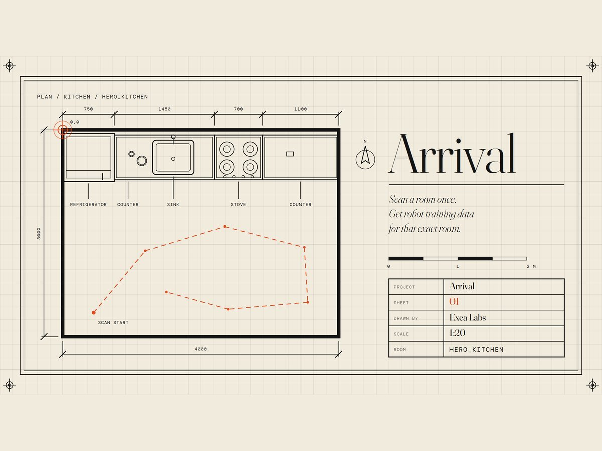
One iPhone scan of a kitchen becomes a physics twin, a robot arm working around walking people, and a dataset NVIDIA GR00T trains on. Fine-tuned on it, GR00T passed 39 of 48 trials, up from 26. I stress-tested every room (288 of 288 runs, zero contacts with people), hunted down bugs and gaps, and recorded much of the demo video.
Led: People & safety
Built: RoboCasa layouts within 2.5 cm; 104 demos from 14 human ones
Fixed: Walker contacts 3 → 0; Franka oven 12/14 → 14/14
Shipped: 41 of 418 merged PRs
GitHub ↗
Live ↗
Demo ↗
HocDiuTempusSumpsit
Solo · Bluetooth robotic arm
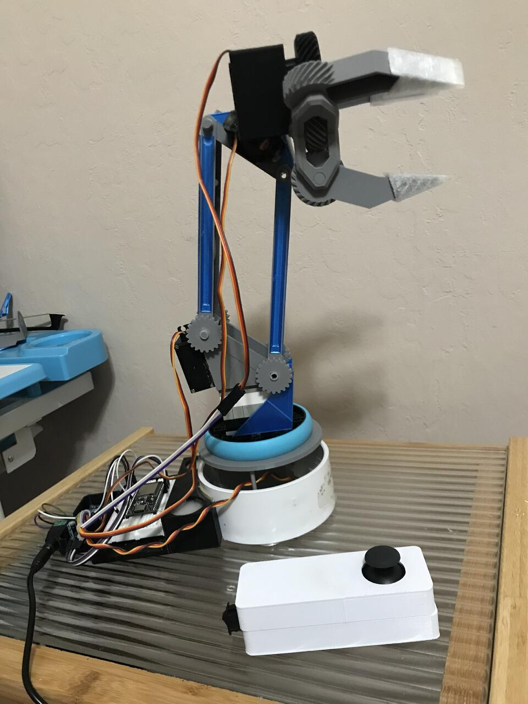
A 4-bar linkage arm with a three-finger helical-gear gripper. When the elbow couldn't hold the load, I reworked the joint geometry instead of buying a bigger servo.
Control: 2× ESP-WROOM-32 + PCA9685, BLE
Servos: MG996R, SG90, A330
GitHub ↗
The Eclipse Lamp
Covert hardware
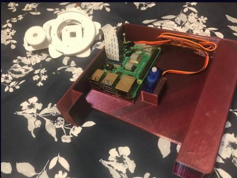
Looks like a normal lamp. Inside, a motorized shutter and a sweeping camera spot people and alert your phone.
GitHub ↗
MagLift
Solo · science fair
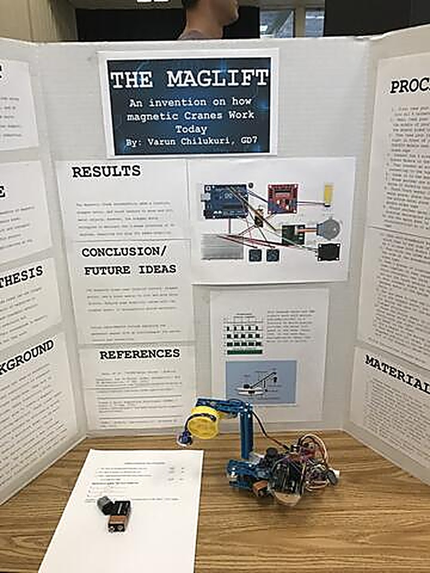
A magnetic crane prototype with joystick and touch-pad control. Designed, built and coded solo.
MARS-61
Concept · on hold
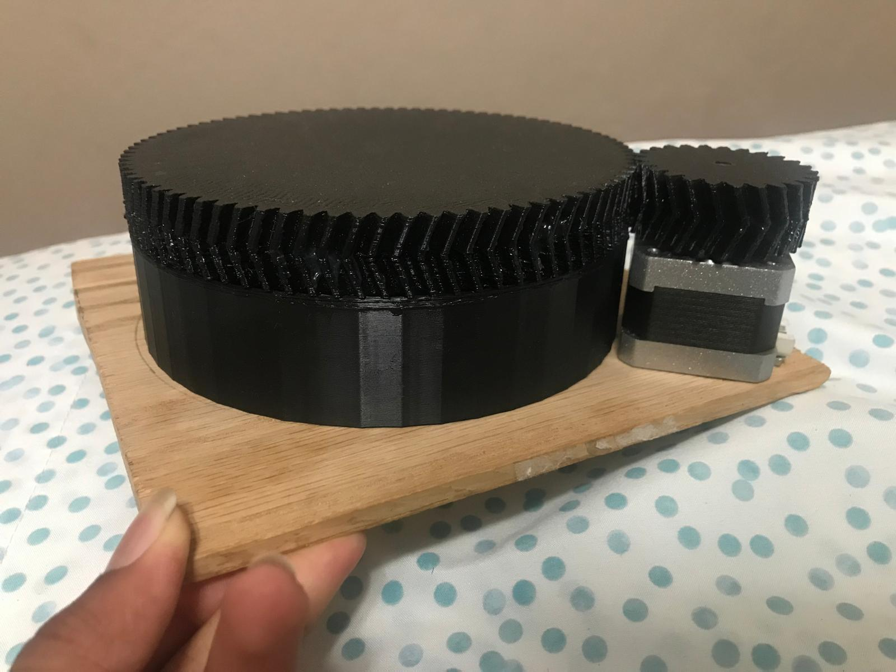
A heavy arm with a dual NEMA 17 shoulder and a custom 5:17 herringbone reduction. On hold, not forgotten.
Gaming Mouse
Built from scratch
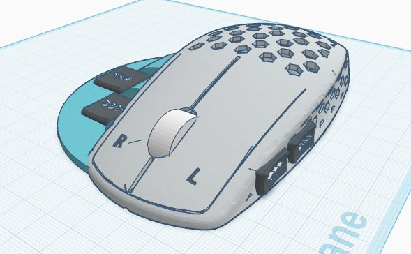
A mouse on a XIAO ESP32-S3 with an optical sensor, LiPo power, and arrow keys built into the shell.
GitHub ↗
WattWatch
Non-invasive current sensing · ESP32
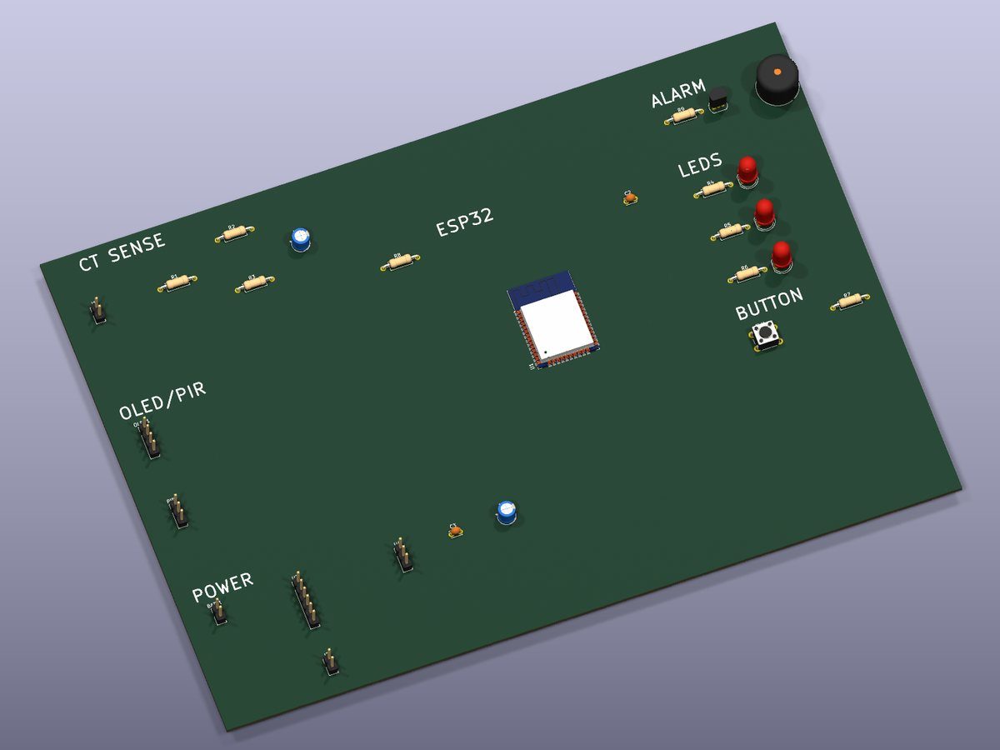
Clips onto an appliance's power cord, with no wiring cut, and checks the current it draws against whether anyone is in the room. Left on in an empty room, it sounds an alarm and sends a push to your phone.
Sensing: SCT-013 current clamp, PIR motion
Compute: ESP32, true-RMS sampling
Alerts: Buzzer, OLED, WiFi push
Board: KiCad schematic + PCB, ERC/DRC clean
GitHub ↗
Dial
Voice payments on Mantle
Send money home by talking to a voice agent in your own language. The dollars lock on the Mantle blockchain in seconds, family picks up cash at a corner shop with a 6-digit code, and anything left uncollected is refunded automatically. No smartphone, bank or app needed on either side.
Voice: ElevenLabs agent, Gemini 2.5 Flash
Chain: Solidity checks contract on Mantle
Server: Node + Express on Vercel
GitHub ↗
Live ↗
Recall
Solo · speech AI for early signs of dementia
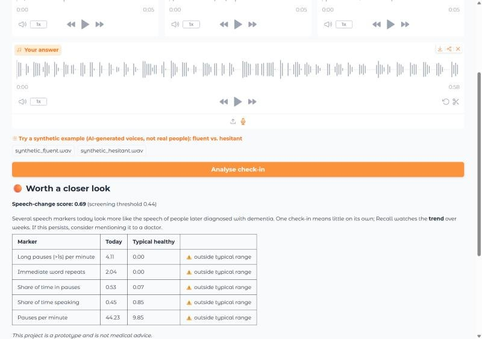
A two-minute daily voice check-in for an aging parent. A friendly voice asks one question, the parent answers out loud, and Recall scores how they spoke: pauses, word-finding gaps, vague words, vocabulary. The family watches the trend over weeks and raises a lasting change with a doctor.
The models that scored highest had learned the recordings, not the people, and failed a sanity check I built. I shipped the best model that passed. A prototype, not medical advice.
Data: 450 public interview clips, 215 people (DementiaNet)
Speech: faster-whisper transcript, 17 speech markers
Model: Knowledge-guided markers + MiniLM ensemble
Testing: No speaker in both train and test; synthetic sanity check
GitHub ↗
Currently
Quicksilver 604: My school's robotics team. I also volunteer teaching LEGO robotics to elementary and middle schoolers.
Synopsys Championship: Structure-Borne Vibration Communication and Localization for In-Pipe Inspection Robots
Hackathon Club: Co-founder and vice president. About 40 members; we teach students to build projects and win hackathons.
Almaden Hacks: Helping host this high school hackathon for software and hardware projects in San Jose.
Speech & Debate: Public forum and impromptu.
Awards
1st Overall, Bay Valley Hacks: Index · 400+ hackers
1st Overall, CSI Hacks: Fetch · 82+ teams
Top 30 High Honors, Veritas AI International High School Hackathon: Recall · solo · shortlisted in the top 30 of 1,000+ projects, 1,700+ students, 75+ countries · $1,250 scholarship
2nd Open Hardware, Berkeley Robotics Hackathon: Ceres · 80+ teams, high schoolers only
2nd Interactive Learning, Milpitas Hacks: Street Sweeper · 220+ participants
2nd Leland High School Science Fair: MagLift · 30+ submissions
1st Dan black belt, Taekwondo: Testing for 2nd Dan in December
GitHub
LinkedIn
Devpost